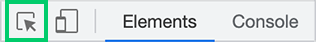
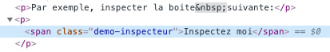
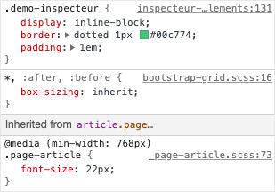

Remarquez en haut à gauche de l'inspecteur l'icône de l'outil d'inspection (carré avec une flèche).
En cliquant sur cette icône, elle deviendra bleue et vous permettra de cibler un élément en particulier sur la page. Elle mettra en évidence tous les éléments survolés en les surlignant, afin que vous puissiez sélectionner l'élément de votre choix.
- L'élément est surligné en bleu 🟦
- Son
padding en jaune 🟨 - Son
margin en orange 🟧
Lorsque l'élément souhaité est surligné, il suffit de cliquer sur celui-ci pour le sélectionner.
Par exemple, inspecter la boite suivante:
Inspectez moiVous devriez voir dans la partie gauche de l'inspecteur la structure HTML de la page. Cette structure est communément appelée le DOM tree. Si vous portez attention, vous remarquerez qu'une balise dans cette structure est surlignée. Cette balise correspond à l'élément inspecté.
Lorsque vous êtes dans le DOM Tree, vous pouvez utiliser les flèches sur votre clavier ⬇️ ⬆️ pour inspecter l'élément précédent ou suivant ou tout simplement votre souris pour cliquer sur un élément en particulier. Vous remarquerez que dès que vous sélectionnez un nouvel élément, celui-ci se surligne dans le DOM Tree ET dans la page simultanément.
Au bas de la fenêtre du DOM Tree, toutes les balises englobant l'élément sélectionné sont listées. Allant de l'élément lui-même jusqu'à la balise
Recherche dans le DOM
Lorsque le focus est dans le DOM Tree, il est possible de rechercher un élément en utilisant un raccourci clavier ⌨️
- Windows
ctrl +f - Mac
command +f
L'élément recherché peut être du texte, une balise, une classe, un sélecteur CSS, etc.
Modification du DOM
Vous pouvez modifier le DOM directement dans l'inspecteur afin de prévisualiser l'impact d'une modification. Pour ce faire, il suffit de faire un double-clic sur l'élément que vous désirez modifier (texte, balise, classe, ID, style, attribut, etc.) ou de faire un clic droit sur l'élément en question et sélectionner l'option Edit text pour du texte ou Edit as HTML pour les autres.
L'élément devrait alors se surligner pour indiquer que vous pouvez le modifier. Lorsque vous avez terminé votre modification, vous pouvez appuyer sur la touche ↵ pour confirmer votre changement ou simplement cliquer à l'extérieur du dit élément.
Par exemple, pour modifier un texte:
Ou encore, modifiez une classe:
Vous pouvez aussi déplacer un élément dans le dom. Pour ce faire, il suffit de faire un glisser-déposer de votre élément (Drag and drop) ↕️
Vous pouvez même supprimer un élément en cliquant simplement sur la touche
L'onglet Styles permet de voir les règles CSS ayant un impact sur l'apparence de l'élément sélectionner.
Ordre d'affichage des règles
L'ordre d'affichage des règles dépend de la priorité de chacune d'entre elles. Plus une règle est spécifique, plus elle apparaitra tôt dans cette liste. Moins elle l'est, par exemple les règles de bases définies par le navigateur (user agent stylesheet), plus elle sera basse.
Par exemple:
- On peut voir que le 1er élément affiché dans la liste est la classe
.demo-inspecteur présent sur l'élément lui-même. On voit que cette classe contrôle trois propriétés. - Ensuite vient une règle moins prioritaire
*, :after, :before . Cette règle dicte que tous les éléments (Sélecteur *) et tous les pseudo-éléments :before et :after doivent avoir unbox-sizing: inherit; . - Finalement, la règle
@media (min-width: 768px) .page-article indique que la taille de la fonte de notre élément est affectée par sont parent.page-article et qu'à partir de 768px et plus, cette taille doit-être de22px .
Priorité des styles
Une propriété d'un élément ne peut avoir qu'une valeur à la fois. Ainsi, lorsque deux règles définissent une même propriété sur un même élément, le navigateur détermine quelle règle est prioritaire et favorise sa valeur. Celle de la règle moins prioritaire continue d'exister, mais n'est simplement pas prise en compte.
Dans notre exemple précédent, nous avons vu que la règle
Une propriété peut aussi être raturée et avoir une icône ⚠️ à sa gauche lorsqu'elle n'est pas reconnue par le navigateur. Généralement, ceci est signe que la propriété ou sa valeur n'est pas écrite correctement.
Un exemple classique pourrait être
Filtrer les propriétés
Il arrive parfois que plusieurs règles affectent un élément ou que plusieurs propriétés soient définies, rendant ainsi la recherche d'une propriété en particulier ardue.
Heureusement, il est possible d'utiliser le champ Filter afin de filtrer les propriétés affichées.
Par exemple, si je ne désire voir que les propriétés affectant le
Voir les pseudo-classes (:hover, :focus, etc.)
Il est parfois nécessaire d'examiner les styles d'un élément lorsqu'il est survolé (hover), focusé (focus), actif (active), visité (visited), etc.
Pour ce faire, il est possible de cliquer sur le bouton
Par exemple, si j'examine un lien sur cette page, je remarquerai qu'il a un
Ajout de propriétés
Il est possible de tester rapidement des styles sur un élément en lui ajoutant des propriétés. Pour ce faire, il suffit de cliquer dans la zone
Désactivation/réactivation d'une propriété
Lorsqu'une règle de style est survolée, les boites à cochée de chacune des propriétés deviennent visibles vous permettant de désactiver/réactiver chaque propriété à votre guise.
Modification d'une valeur
Il est possible de modifier une valeur simplement en cliquant sur celle-ci.
Par exemple, si je désire voir comment réagirait mon élément en
Dans le cadre d'une valeur numérique, il est même possible d'augmenter/diminuer une valeur simplement positionnant le curseur sur la valeur en question et en utilisant les flèches ⬆️ et ⬇️ du clavier.
Lors de la modification d'une valeur numérique avec les flèches du clavier, la valeur fluctue de 1 unité par défaut. Cependant, il est possible en tenant la touche alt enfoncée de modifier la valeur de 0.1 pour plus de précision ou encore de 10 avec la touche de shift ↑ pour aller plus rapidement à une valeur éloignée.
Recharger la page restaure les styles originaux.